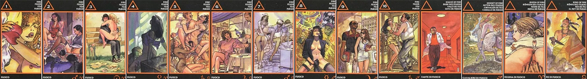

ТУЗ ОГНЯ
Нередко Туз Огня символизирует потенцию, сексуальность. Так в "Эротическом Таро Манары" на карте изображена женщина, которая смачно откусывает кусок от большого сердца. И образ сердцеедки выражает умение воплощать фантазии партнёра, способность быть тем, кем тебя хотят видеть. Поэтому Туз Огня символизирует в этой колоде творчество, темперамент, точку отсчёта для создания или продолжения любовных отношений.
Ярко выраженная страсть в чистом виде. Гиперсексуальность, сгусток энергии, которая не только переливается через край, но ищет выход и находит его. Желание, вожделение, возбуждение. Активность, проявление инициативы. В негативном аспекте - эгоизм, вампиризм, хищность и бесчувственность. Отношения держатся на очень сильном сексуальном влечении. Кроме этого, пожалуй, в партнере ничего не интересует. Поэтому и гармонии-то здесь нет. Связь очень насыщенная, но тяжелая. Одна сплошная страсть. В таких союзах кто-то из партнеров может представлять из себя яркую активную личность. В паре отсутствовать могут не только чувства, но и мораль. Так что верность здесь проблематична - партнера легко могут поменять. Есть только "хочу", жажда обладания в данный момент.
2 ОГНЯ
Умение контролировать себя олицетворяет в "Эротическом Таро Манары" двойка Огня. На карте две женщины позируют перед камерами. Они непринуждённо улыбаются, хотя каждую из них гложет мысль: вдруг соперница окажется лучше? Поэтому двойка Жезлов здесь выражает возможность показать себя с лучших сторон, позитивный взгляд на вещи, не смотря даже на ограниченные возможности человека. А вот в любви она точно означает соперницу.
Блестящий, яркий фантик, а внутри – пусто, нет конфеты. Это карта саморекламы, демонстративности, привлечения внимания, показной открытости, эксплуатации своего влияния на окружающих в личных интересах. Манипулирование доступностью, сексуальностью, и удовлетворение от этого. Циничность, аморальность, расчетливость. Внешняя чрезмерная открытость при полной внутренней закрытости. В отношениях этой пары со стороны все может выглядеть прекрасно, но это лишь игра напоказ, на публику. Много фальши. Демонстрация хорошего отношения к партнеру, а внутри к нему может быть что угодно другое – равнодушие, пренебрежение, или даже ненависть. Сердце, душа остаются закрытыми. Много показухи, вплоть до вульгарности, развязности. Партнер рассматривается как зеркало для того, чтобы оценить себя.
3 ОГНЯ
Сексуальность и некоторая порывистость выражены на карте тройки Жезлов в "Эротическом Таро Манары". Мужчина, одетый в костюм и галстук, сидит на лавочке. А у него на коленях устроилась обнажённая женщина. Она страстно обнимает его. Её одежда, туфли в беспорядке разбросаны рядом. Так выразилась поспешность её действий. Эта женщина не дожидалась внимания от мужчины, а перехватила инициативу, взяла её в свои руки. Карта символизирует неожиданное начало отношений, встречи в ненадёжном месте, примирение после ссоры.
Чрезмерная активность, напор, натиск, стремление любой ценой удовлетворить свои желания, добиться своего. Завоевание, азарт соблазнителя. Однако, напор столь велик, что в ситуации наблюдается полный дисбаланс - один партнер бестактно, неадекватно и бескомпромиссно добивается другого, который, в свою очередь, от такой прыти - в полном недоумении и замешательстве - "Что это было?" Нет чувства меры, нет равновесия, гармонии - один слишком инициативен, что пугает и выглядит странно. А другой - зажат, закомплексован, пассивен, не понимает, что происходит и с чего бы это вдруг? Хотя он особо и не против этой связи, но напористость партнера портит дело. У одного самооценка завышена, у второго - занижена. Дисбаланс - и в сексуальном потенциале.
4 ОГНЯ
Опыт в любовных отношениях, порой сентиментальность таковых выражает четвёрка Жезлов в "Эротическом Таро Манары". Здесь изображена женщина, напрягшаяся от удовольствия. Мужчина целует её тело, доставляя ей наслаждение. Огонь страсти горит в этой карте. Она говорит о согласии партнёров, взаимной гармонии, наслаждении.
Тайна. Взаимовыгодное удовлетворение желаний, и эта выгода вызывает зависимость. Случайные, ненужные, однако затянувшиеся, достаточно устойчивые отношения двух чужих друг друг людей. Причем, оба хотят сохранить эту связь в тайне, не афишировать ее. Всех устраивает данное положение вещей. Часто карта показывает служебный роман, о котором окружающие даже не догадывается. В любом случае - это тайная связь двух неравных партнеров. Каждый из них удовлетворяет свои потребности (которые могут быть разными), и не беспокоится о последствиях. Чувства партнера тоже не интересуют. Карта может показывать и не совсем обычные интимные потребности, нарушения в половой сфере, неполноценность, извращенность.
5 ОГНЯ
Несерьёзность конфликта или игра, которая может стать прелюдией для устойчивых отношений и дружбы, выражена пятёркой Жезлов в "Эротическом Таро Манары". На ней изображены две женщины, заигрывающие с мужчиной, но не как конкурентки, а как партнёрши. Делёж мужчины не для них, поскольку он не рассматривается всерьёз. Карта символизирует сложность выбора самого мужчины между двумя женщинами и терпеливость его подруг, а порой – его неумение отказать другой женщине. А если пятёрка Огня выпадает в отношениях только двоих, то она может утверждать, что человек старается стимулировать своим поведением или разговорами сексуальность знакомого
Раздирающие мучительные противоречия, кажущиеся неразрешимыми. Два абсолютно разных желания раздирают на части, и совсем не понятно, какое же направление из двух сильнее, правильнее, лучше.
Внутренний конфликт, стресс, который может довести и до вспышек агрессии (причем чаще направленных в свой адрес), и до нервного срыва, и до психосоматических заболеваний. Кризис, требующий принятия решения, но выбор сделать очень сложно. В отношениях карта может показать любовный треугольник, из которого никак не можешь найти выхода. Но значительно чаще речь идет не о третьем лице, а о внутренних противоречиях, которые разрывают человека надвое, и он не в силах определить, по какому же курсу следовать. Либо просто не имеет сил следовать лишь по одному из них, поэтому продолжает пребывать на пике противоречий (хотя такая ситуация долго продлиться не может - слишком болезненная). Взаимоотношения сложные, тяжелые, полные напряжения. Невозможно обрести гармонию - два совершенно несовместимых понятия требуют сочетания в одном.
6 ОГНЯ
Дерзость или преодоление застенчивости приносят свои плоды и в любви. Особенно ярко эта черта карты выражена в "Эротическом Таро Манары". Здесь на шестёрке Жезлов изображена сидящая в кафе женщина. Она бесстыдно домогается официанта, наливающего ей вино. Смелость! Поэтому образ такой женщины может часто символизировать интимное предложение. А вот в сложившихся отношениях шестёрка Огня скажет о достижении внешнего благополучия, но внутреннем отсутствии нежности, трепетных чувств, самоутверждении посредством партнёра. Говоря же о личных качествах человека, нельзя не отметить её достоинство, несокрушимую волю, амбиции.
Мезальянс, флирт ради развлечения двух представителей совершенно разных социальных слоев. Неравная связь. Например, заигрывание высокопоставленного лица со слугой, богатого посетителя ресторана с бедной официанткой и т.д. Это игра, бегство от скуки. Ничего серьезного. В отношениях кто-то чувствует вседозволенность и полную власть, развлекается, создавая тем самым скандальную, странную, неординарную ситуацию, а второй партнер оказывается в неловком положении и страдает. Но не от любви, а от двусмысленного, неадекватного положения. Отношения поверхностные. Эдакое приключение, без всяких обязательств и ответственности. Можно даже сказать, - использование партнера для того, чтоб самоутвердиться, почувствовать рядом с нижестоящим свою значимость, благодаря контрасту, и повеселиться от эффекта, производимого на него этой странной ситуацией.
7 ОГНЯ
Неумение выбрать из массы имеющихся возможностей именно ту, которая нужна, символизирует в "Эротическом Таро Манары" сюжет семёрки Жезлов. Мужчина изображён как лежащий в отдельной палате больной. И его пытаются ублажать четыре медицинских сестры. Судя по изображению карты, их старания привели лишь к одному – пациент обленился и расслабился ещё больше. Таким образом, карта семёрки Огня выражает изменения отношений к худшему или попытки самооправдания человека, доходящие порой до обмана.
Излишняя навязчивость, чрезмерное внимание и потребности, неадекватно сильная активность. Отсутствие меры и баланса. В отношениях кто-то настолько демонстрирует свою любовь и заботу, что даже не замечает, что уже буквально душит этим партнера - у него нет ни желания, ни сил принимать эту любовь. Он пресыщен им до такой степени, что его может уже тошнить от отвращения. Активного партнера неадекватно много, а от второго уже почти ничего не осталось, он раздавлен этой навязчивостью, у него уже нет сил. В паре кто-то излишне старается реанимировать отношения, или добиться взаимности, но тщетно. Партнеры не равны ни в чувствах, ни в сексуальном потенциале.
8 ОГНЯ
Присущая данной карте динамика интересно выложена в эротическом Таро Манары. Вокруг героини карты причудливо переплетаются образы мужчины, цветов, экзотической птицы. Скользя мимо них, она закрыла глаза и погрузилась в свои ощущения. И ее рука, прижатая к лобку, подчеркивает, что ощущения могут быть сексуальными. Таким образом, повышенную возбудимость, нетерпеливость человека символизирует карта. Когда-то это дает благоприятные результаты, а иногда - и нет. Поэтму такого субъекта следует иногда "притормаживать". В качестве неблагоприятных ощущений карта может символизировать климактерические растройства у женщины.
Воображение, визуализация, фантазии. Отношения - виртуальные, в мечтах, представлениях, снах. В подавляющем большинстве случаев, в таких отношениях нет физического контакта, но он активно представляется в воображении. Это могут быть интимные отношения в медитации, или по Интернету. Карта часто показывает связь по переписке, по телефону, смс, или вообще только в голове, - телепатический контакт. Или некий телефонный звонок, или известие, информацию, слухи, сплетни, которые, впрочем, далеки от реальности. Также эта карта может быть указанием на то, что события в отношениях наступят даже быстрее, чем ожидается. Причем, чем больше желаемое событие будет визуализироваться, тем скорее и в более полной форме оно исполнится.
9 ОГНЯ
Девятка Жезлов говорит о сексуальной неудовлетворённости. В "Эротическом Таро Манары" она символизирует отказ от отношений или сохранение таковых только на уровне дружбы. На изображении карты видны идущие с книгами в руках молодая белая девушка и африканец. Девушка пресекает попытку эксгибиционизма у своего спутника. Поэтому, появившись в раскладе, девятка Огня часто говорит о бдительности, отрицательной реакции на соблазнение или о нежелании вступать в контакт. Порой эта карта может говорить о творческих особенностях, о чрезмерной серьёзности человека, которые конфликтуют в нём со стремлением к удовольствию.
Общие интересы, интеллектуальное общение, совместное хобби. Отношения приятельские, где во главу угла ставятся объединяющие двоих интересы и занятия. Партнеры могут быть совершенно разными во всем, вплоть до национальности и вероисповедания. У них довольно большие культурные различия и мировоззрение. Однако, прекрасно зная это, они все равно вместе, не обращая внимания на условности. Они просто закрывают глаза на большие различия между ними, которые, скорее всего, не позволят отношениям быть долгими и ставят под сомнения совместные перспективы. Но пара живет исключительно сегодняшним днем и не заботится ни о чем. Им просто интересно и легко вместе здесь и сейчас. Это могут быть отношения сокурсников, коллег, или связь с человеком, с которым вместе посещаешь какие-либо курсы или занятия. И именно интеллектуальное родство является главным в этой паре.
10 ОГНЯ
Десятка Жезлов нередко сообщает о катастрофах, психологическом давлении на человека, его усталости. В дружбе она может означать предательство, в бизнесе – неподъёмное и бесперспективное дело, волокиту, канцелярские проблемы. Конкретного человека данная карта характеризует как решительную, творческую и волевую личность, разнообразие характеристик которой в результате вызывает конфликт. Он вынужден всегда выбирать, потом возвращаться к тому, от чего отказался в результате выбора. Если же он отказался от отношений, попробуй потом объясни партнёру, что это только малая часть жизни! А "Эротическое Таро Манары" как раз и символизирует подобный конфликт. Здесь прямо на лестничной клетке мужчина домогается женщины. Она отказывается, пытаясь уйти. И в бытовом плане карта порой может говорить о притеснениях, происходящих в сексуальной сфере, об усталости от чудачеств партнёра, о его двуличности.
Принуждение. Сопротивление лишь усиливает натиск. Претензия на партнёра, как на свою вещь – важно показать свою силу, власть. Изнасилование.
Взаимная агрессия, злость, грубость, конфликт, провокация, насилие. Состояние аффекта. Страсти накалены до предела. Настолько, что люди находятся уже на грани срыва, не владеют собой. Раздражение и ярость берут верх над разумом и рамками приличия. В отношениях никто не хочет уступать. Ожесточенное противостояние, бескомпромиссность. Люди в таком состоянии не могут ни понять, ни просто услышать друга друга. До тех пор, пока не возьмут себя в руки и не успокоятся. Сейчас же они вымещают свою ярость и негодование друг на друге. Карта может указывать на претензию на полное обладание партнером, ревность, желание доминировать. Сложно найти выход из конфликта - партнеры ходят по замкнутому кругу, и каждый настаивает на своем.
СЛУГА ОГНЯ
Вестник Жезлов – всегда напористая и темпераментная личность. Он склонен к наёмному труду и относится к нему ревностно. В "Эротическом Таро Манары" Слуга Огня изображён в виде шагающего по длинному коридору мужчины, одетого в белый халат, под которым красная рубашка, подчеркивающая вместе с красным фоном этой карты темперамент, решительность. И появившееся в раскладе изображение Слуги Огня говорит о деловом человеке, младшем компаньоне, хорошем профессионале в сфере услуг и неподражаемом любовнике. Однако, он может быть излишне прямолинеен, может сказать то, что, подумав, не скажешь.
Деловитость, суета, хлопоты, загруженность работой, переутомление. Физическое и эмоциональное истощение из-за обилия дел и решения проблем. Карта может показывать связь с коллегой по работе. Отношения по этой карте деловые, в лучшем случае - приятельские, дружеские. Вероятно чье-то участие в делах партнера, помощь в решении проблем. Также может быть указание на начало отношений, где есть готовность к ним, но пока нет возможности или времени на осуществление планов.
ВСАДНИЦА ОГНЯ
В "Эротическом Таро Манары" Всадница Огня изображена удаляющейся от нас. На своём пегом коне мчится она мимо прекрасных пейзажей, рощ и аллей. Её образ выражает путешествия, психологическую дистанцию между людьми или отсутствие нужного человека.
Авантюризм, скорость, движение, энтузиазм, энергичность, целеустремленность. Независимость, риск, смелость, азарт. Путешествие, отъезд. Отношения имеют стремительное развитие. Поверхностные, легкие, без глубины. Свобода и независимость в них ставятся во главу угла. Речь может идти о свободных отношениях, о паре с раздельным проживанием, или о разведенной паре. Или человек, о котором спрашивают, - в разводе, в отъезде (краткосрочном).
КОРОЛЕВА ОГНЯ
Обычно образ Королевы Жезлов говорит о женщине, которую интересует не столько семья, сколько работа, общественная деятельность или светская жизнь. Однако, в "Эротическом Таро Манары" Королева Огня изображена в образе шатенки, лежащей на постели. В дали от неё видны две фигуры влюблённых, любующихся Луной. И карта символизирует истосковавшуюся и, возможно, ожидающую мужа, жену, её страстную сексуальность, эротические фантазии и подчас, увы, катастрофу мужчины в этом плане.
Карта указывает на активную, энергичную, страстную, сексуальную, артистичную и магнетичную женщину. Она может быть бизнес-вумен, актрисой, или просто успешной женщиной. Способна интриговать, эгоистична, ревнива, честолюбива. Если речь идет не о женщине (а чаще всего это указание именно на женскую фигуру), то отношения в паре по этой карте - бурные, драматичные, полные динамики, насыщенности, накала страстей. Строятся прежде всего на сексе. И не долговечны. Страсть. В паре кто-то более опытен и занимает ведущую позицию. А второй партнер ожидает от него активности. Пробуждение сексуальности, инициация. Речь может идти и о первом сексуальном опыте.
КОРОЛЬ ОГНЯ
Стихия Огня придаёт персонажу карты и темперамент, и сексуальность. Обычно это профессионал, занимающий высокое положение, заботливый, уверенный в себе мужчина, способный хорошо обеспечить семью. В колоде "Эротического Таро Манары" особенно подчеркиваются профессиональные качества Короля Жезлов. Здесь на карте изображён шаман во время камлания: стоя в клубах дыма, он находится в глубоком трансе. Он отправился в трудное мистическое путешествие, чтобы кого-то вылечить, привлечь в дом духов богатства или любви. Наверное, кому-то покажется странным образ шамана. Действительно, его появление в раскладе может означать просто эксперимент, а вылечить может и врач, пообещать любовь – психолог. Поэтому карта также часто означает встречу с интересным мужчиной, к которому обратится гадающий по какому-нибудь поводу.
Речь идет о ярком, решительном, волевом, уверенном мужчине - лидере. Он щедр, благороден, успешен и авторитетен. Страстный, сексуальный, энергичный, "душа компании", любит быть в центре внимания, увлечен игрой, любовными делами, развлечениями. Властный, обаятельный, открытый. Ему может не доставать интеллектуальности. Отличается эгоизмом, хвастливостью. Есть вероятность, что склонен к множеству любовных увлечений. Карта может указывать на помощь высокопоставленного влиятельного человека. В отношениях - красивые ухаживания, где мужчина - герой-любовник, охотник-завоеватель, а женщина чувствует себя благодаря ему Королевой, Женщиной с большой буквы. Отношения яркие, страстные, бурные. Но стабильные лишь до тех пор, пока мужчина не добьется от женщины взаимности.